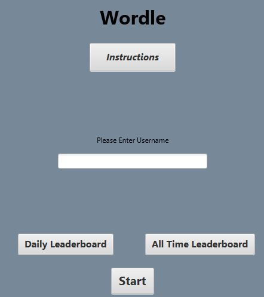

Project Experience
Wordle Project - Co-Creator
Collaborated in a team to create a version of the popular game “Wordle” that gave five words per day instead of just one using Java
Stored word information and user data in an SQL database
Utilized packet-based communication between a client and the server
Used data obtained through machine learning to give each word a score based on its difficulty (uncommon letters, frequency in literature, etc.)

Hospital Management System - Co-Creator
Worked in a team using Agile processes to create a web-based management system to be implemented in a hospital
Data was stored in an SQL database
Programmed with HTML for front-end and Java Spring Boot for backend
Sam Maschmann
Resourceful, motivated university student pursuing a Bachelor of Science degree in Computer Science. Detail-oriented and works hard to stay on task, meet aggressive deadlines, and accomplish goals. Seeking opportunities to gain experience by creating practical and scalable software to solve problems for users. Motivated to learn from senior engineers while sharing innovative ideas that value personal growth.
Skills
Languages
Java | Python | C++ | C | CSS | HTML | Java Script | Bash | Haskell | Assembly | Verilog
Methodologies
Agile
Waterfall
Unit Testing
Tools
Linux
SQL
Firebase
Github
JavaFX
Spring Boot
Artificial Intelligence / Machine Learning
Education
The University of Iowa
Bachelor of Science in Engineering, Computer Science Engineering
Focus Area: Software Engineering
GPA - 3.08

Work Experience
James Hardie Building Products - Intern
Spent two summers working in teams and assisting machine operators
Created Google Forms linked to spreadsheets for machine operators to enter daily logs
Developed windows in HMI software “Wonderware” that gave machine operators neededinformation of how the machines were running
Worked in a team to identify superfluous parts of the ladder logic in the control system
Responsible for transferring detailed job task instructions from an old database into an Excel sheet for employees to more easily access the instructions